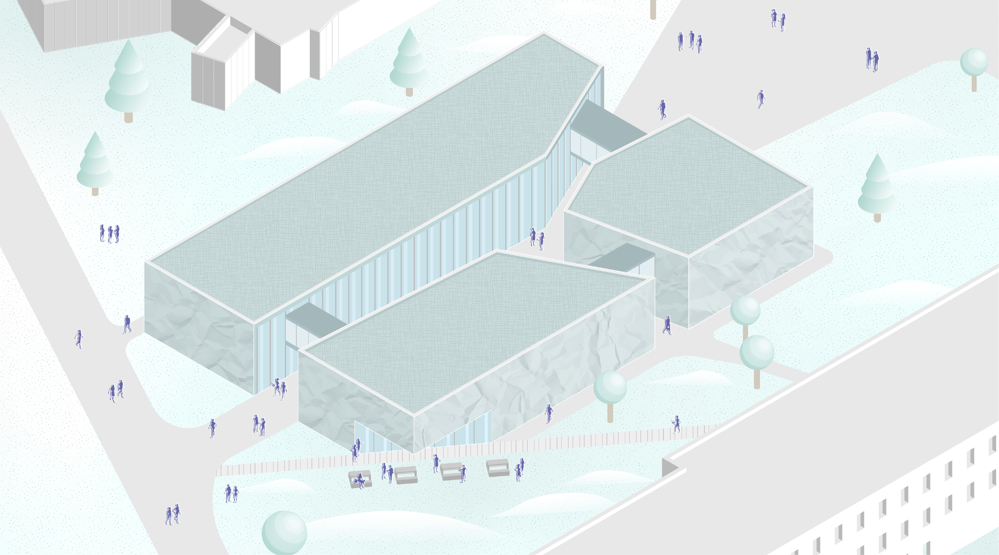
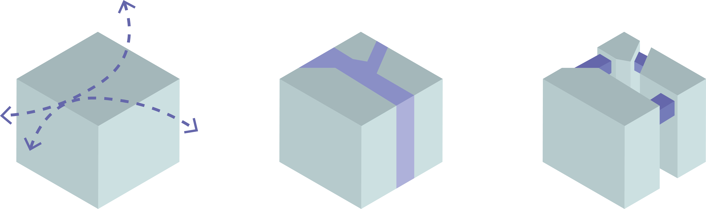
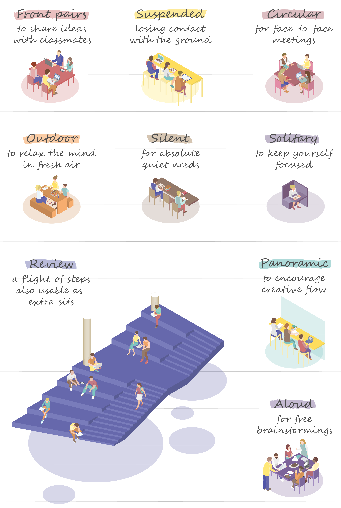
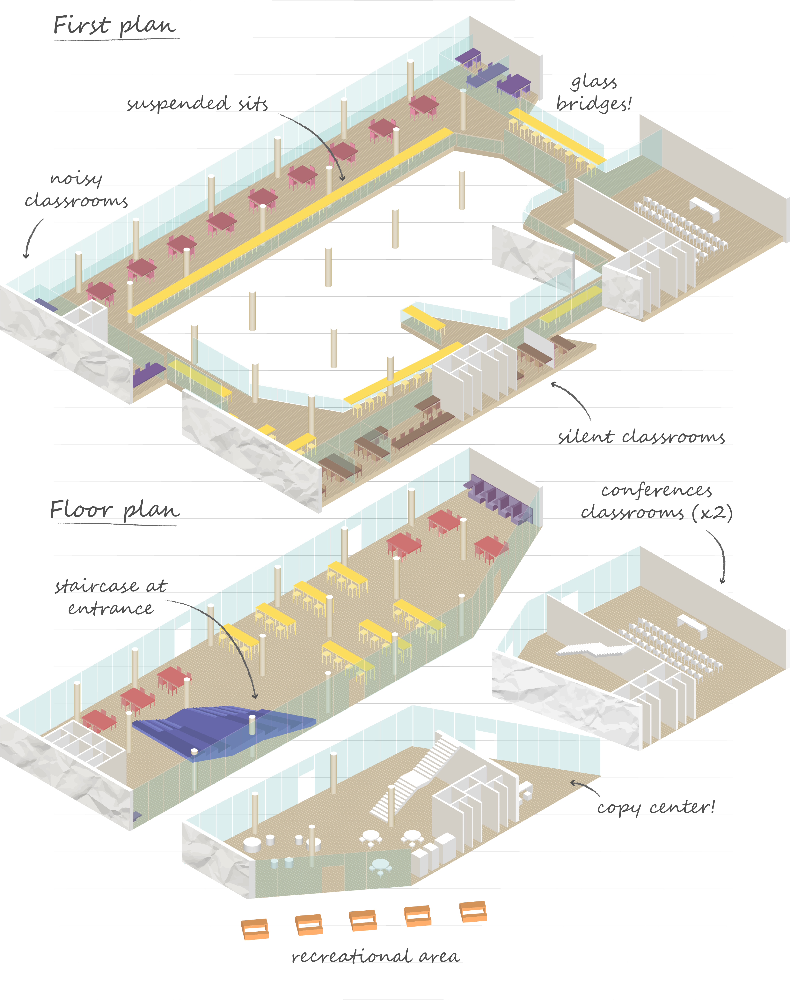

Project type
Academic
Collaborative
Tools
Autocad
Revit
SketchUp
Adobe Illustrator
Duration
5 months

The project focused on creating a university campus in
Sarajevo, with each team of three assigned a building of interest.
Among various faculties, a sports complex, and an
auditorium, our team was assigned a building designated for
study halls.
It houses a street on the ground and hosts glass bridges on the
upper floor to recreate a suspended unique space.

We correlated each study type with an analysis of the
furnishings used to create that particular study environment.
Each type of study requires different levels of concentration
and/or interaction, as well as an available proper space.
The interior design begins with the research of the
most suitable furniture for each request.

Indoors, you'll find several areas categorized by study type,
along with a recreational zone.
The exterior concrete
covering evokes the pattern of crumpled paper.
